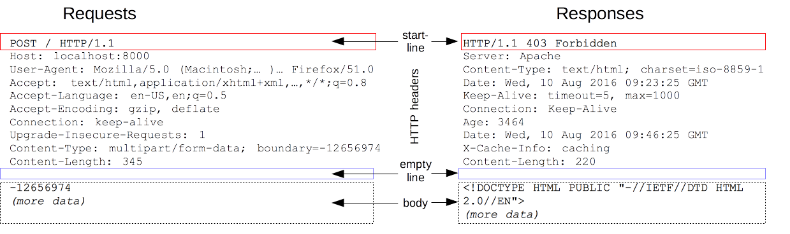

{{HTTPSidebar}}
HTTP Messages are the fundamental structure of the data exchange betwee an HTTP server and an HTTP client. There are two types of messages: requests sent by the client to trigger an action on the HTTP server, that answers by sending a response.
HTTP Messages are composed of textual information using ASCII and spanning over multiple lines. In HTTP/1.1 and earlier versions, these messages were sent directly over the connection. In HTTP/2 the human-readable message are integrating into HTTP frames allowing to further optimize for better performance. On the other side, Web developer, or webmasters, rarely craft the textual HTTP messages themselves: the piece of software, being a browser, a proxy, or a Web server, is doing it for them; they control it through config files (for proxies or servers), through APIs (for browsers), or through other interfaces.
(images of the API -> HTTP/1.1 msg -> HTTP/2 frame message, with transmission, ...)
The HTTP/2 framing mechanism has been designed so that it didn't need any adaptation of the APIs or config files used. It is mostly transparent for the user controlling the equipment: the Web developer and the webmaster mostly deal with the HTTP/1.1 textual messages, this is what we will describe in this article.
Both HTTP requests and responses shares a similar structure and are composed of:
- A start-line that describe the requests to be performed (for a request message), or its status being success or failure (for a response message). This start-line is always a single line.
- An optional set of HTTP headers precising the request or describing the body of sent in the message
- A blank line indicating that all meta-information for the request has been sent.
- An optional body that can contain data associated to the request (like the content of an HTML form), or the document associated to a response. The presence of the body and its size is defined by the start-line and the HTTP headers.
The start-line and the HTTP headers are called the head of the requests, in opposition to the payload, the body.

HTTP Requests
Start line
HTTP requests are messages sent by the client to initiate an action on the server. Their start-line contains three elements:
- An HTTP method, a verb (like
GET,PUT, orPOST) or a noun (likeHEAD, orOPTIONS), that describe the action to be performed. For exampleGETindicates that a resource has to be fetched orPOSTmeans data is pushed to the server (that may create or modify a resource, or generate a temporary resource to send back). - The request-target, usually an URL, or only the absolute path part of it as the protocol, port, and domain are most of the time defined by the context. The format of this request-target vary between different HTTP methods. It can be
- An absolute path, eventually following by a
'?'and a query string. Called an origin form, this is the most common form and is used withGET,POST,HEAD, andOPTIONSmethods.
POST / HTTP 1.1
GET /background.png HTTP/1.0
HEAD /test.html?query=alibaba HTTP/1.1
OPTIONS /anypage.html HTTP/1.0 - A complete URL, the absolute form, mostly used with
GETwhen connected to a proxy.
GET http://developer.mozilla.org/en-US/docs/Web/HTTP/Messages HTTP/1.1 - The authority component of an URL, that is the domain name and optionally the port (prefixed with a
':'), called the authority form. It is only used withCONNECTwhen setting up an HTTP tunnel.
CONNECT developer.mozilla.org:80 HTTP/1.1 - The asterisk form, a simple asterisk (
'*') used withOPTIONSand representing the server as a whole.
OPTIONS * HTTP/1.1
- An absolute path, eventually following by a
- The HTTP version, that defines the structure of the rest of the message, and act as a indicator of the version to use for the response.
Headers
HTTP headers for request follow the basic structure of any HTTP headers: a case-insensitive string followed by a colon (':') and a value whose structure depends of the header. The whole header, including the value, stands in one single line.
Headers available for requests are numerous; they can be divided in several groups:
- General headers, like {{HTTPHeader("Via")}}, that apply to the message as a whole.
- Request headers, like {{HTTPHeader("User-Agent")}}, {{HTTPHeader("Accept-Type")}}, that modify the request by specifying it (like {{HTTPHeader("Accept-Language")}}, by giving context (like {{HTTPHeader("Referer")}}, by conditionally restricting it (like {{HTTPHeader("If-None")}}.
- Entity headers, like {{HTTPHeader("Content-Length")}} that applies to the body of the request. Obviously there are no such headers transmitted when there are no body in the request.
Body
The last part of a request is the body. Not all requests have one: requests fetching resources, like GET or HEAD usually don't need any, DELETE or OPTIONS neither. Some requests send data to the server in order to update it: this is often the case of POST requests (that can have HTML form data).
Bodies can be broadly divided in two categories:
- Single-resource body consisting of one single file, defined by the two headers: {{HTTPHeader("Content-Type")}} and {{HTTPHeader("Content-Length")}}
- Multiple-resource body consisting of a multipart body, each containing a different bit of information. This is typically used in association with HTML Forms.
HTTP Responses
Status line
Headers
HTTP headers for request follow the basic structure of any HTTP headers: a case-insensitive string followed by a colon (':') and a value whose structure depends of the header. The whole header, including the value, stands in one single line.
Headers available for requests are numerous; they can be divided in several groups:
- General headers, like {{HTTPHeader("Via")}}, that apply to the message as a whole.
- Response headers, like {{HTTPHeader("Varyt")}}, {{HTTPHeader("Accept-Ranges")}}, that gives additional information about the server (that cannot be put in the status line.
- Entity headers, like {{HTTPHeader("Content-Length")}} that applies to the body of the request. Obviously there are no such headers transmitted when there are no body in the request.
(image)